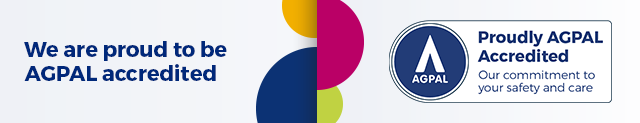
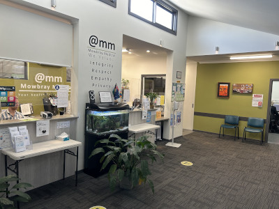
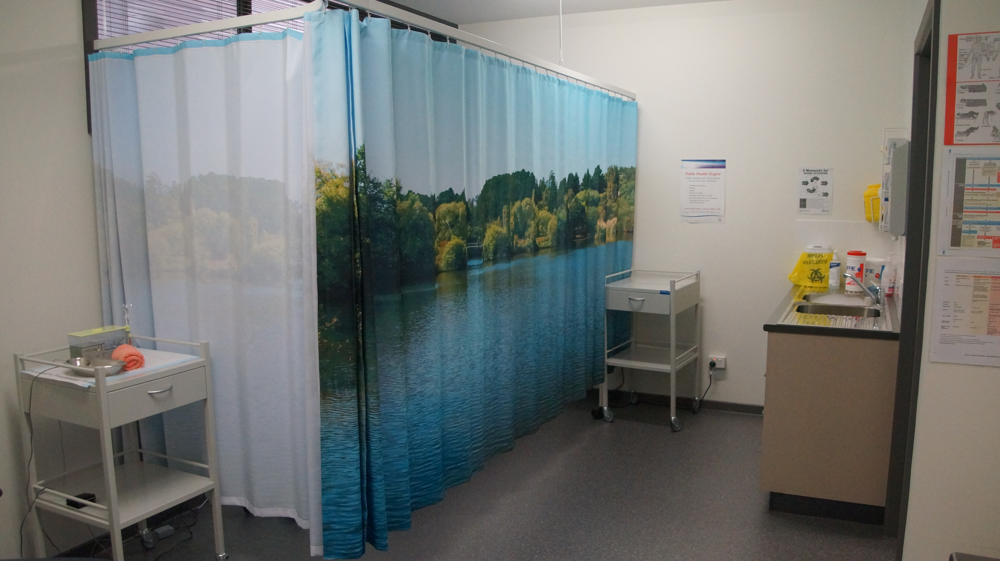

Dr Jane Hampson
Dr Jane Hampson MB BCh, MRCGP, FRACGP specialises in family medicine, migrant health, sexual health/contraception and antenatal shared care.
Your health is
our priority
Ph: 03 6326 7555
03 6326 7555 Book Appointment
Shop 3/282 Invermay Road, Mowbray Tas 7248.
We are a community friendly medical practice, committed to ensuring that everybody is treated with dignity and respect, without judgement or discrimination, regardless of their ability, cultural background, religion, ethnicity, gender identity, intersex status or sexual orientation. Supporting the Culturally and Linguistically Diverse (CALD) and LGBTIQA+ communities We promote adolescent health.
Mowbray Medical is a training practice accredited with RACGP and the University of Tasmania. From time to time we have doctors working here who are gaining specialist skills in general practice and medical students experiencing patient care outside of the hospital setting.

 We are open: Mon to Fri 8am - 5:30pm PLEASE BRING YOUR MEDICARE CARD WITH YOU Appointments are scheduled on a standard 15 minute consultation time. Extended consultations are available, so if you believe you require a longer appointment please let the reception team know.
Hello Home Doctor - 134 100 Emergency – 000 and ask for an ambulance National Home Doctor service – 13 74 25
You can find good health weblinks in the resource section. Click on the below for more information
Dr Jane Hampson MB BCh, MRCGP, FRACGP specialises in family medicine, migrant health, sexual health/contraception and antenatal shared care.
I am an experienced GP from Iran, having joined Mowbray Medical in March 2023. I am particularly interested in Women's health, antenatal shared care and chronic disease management. My first language is Persian (Farsi) but speak and understand English well. When not working, I enjoy spending time with my family and friends, cooking and reading.
Dr. Trish completed her training in "the Tassie of Canada" also known as Saskatchewan (less dairy, more sweet corn, and a lot more snow!). She relocated from Toronto in 2022 but has lived and worked in rural and urban communities ranging from Cape Town to the Arctic! Her passion for general practice is rivalled only by her enthusiasm for family, food and fitness! She is a keen environmentalist, practiced vegetarian and practicing bushwalker. She has cultivated a niche in women's health and is also working part time at the Women's and Children's Services at LGH.
I am experienced GP from Iran, having completed my study in Iran in 2005. I have a strong interest in skin conditions and chronic disease care. My career has taken me to Europe for a time and now here to lovely Tasmania. I am very grateful for the opportunity to work with such friendly and amazing people. In my free time I love to emerse myself in nature, music, travels and driving. My native spoken language is Persian (Farsi) but do speak and understand English relatively well.
Shrima joined Mowbray Medical in January 2025. She has a special interest in children's and women's health but enjoys all aspects of family medicine. When not at work she enjoys spending time with her family
These health checks will be bulk billed. Please mention when booking an appointment.
At Mowbray Medical We Value:
Drs at Mowbray Medical work as private contractors and so decide their own fees. The fees advertised are what has been agreed by all Drs as a group at this time. We accept cash or eftpos. Medicare rebate is available on the day if you have your savings card with you.
| Item Number | Full fee | Concession rate | Medicare rebate |
|---|---|---|---|
| 3. Brief Consults | $56 | $42 | $19.60 |
| 23. < 20 mins | $95 | $73 | $42.85 |
| 36. > 20 mins | $145 | $124 | $82.90 |
| 44. > 40 mins | $190 | $165 | $122.15 |
MyMedicare was introduced into the health sector in 2023. This is a voluntary patient registration model, aiming to formalise relationships between patients, Drs and other care providers. For more information
Ph: 03 6326 7555 Fx: 03 6326 7905 Shop 3/282 Invermay Road Mowbray Tas 7248 (next door to the Terry White Pharmacy)
Tasmanian Medical Pathology (TML) on site Monday to Friday 8am to 3pm Mowbray Medical patients can call for their pathology or radiology results daily between 12-12.30 & 4-4.30